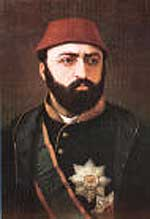

Sultan Abdülaziz (1830-1876)

Osmanlý padiþahý ve Sultan II. Mahmud’un oðludur. Þehzadeliði çok rahat geçmiþtir. 1861 yýlýnda tahta geçmiþ ve 15 yýl saltanat sürmüþtür. Saltanatý boyunca gerek siyasi, gerek ekonomik olarak çok büyük sorunlarla karþýlaþmýþtýr. Çalýþmalarýyla, donanma baþta olmak üzere, Osmanlý Ordusunu çok önemli bir konuma yükseltmiþtir. Ýç ve dýþ sorunlarýn büyüklüðü ve bunlarýn giderek artmasý, ýslahatlarýn baþarýsýný önemli ölçüde sekteye uðratmýþtýr. 1876 yýlýnda tahttan indirilmiþtir. Tahttan indirildikten sonra intihar ettiði veya katledildiði yolundaki iddialar günümüze kadar tartýþýlagelmiþtir. Risale-i Nur’da saltanat sürdüðü dönemde meydana gelen fitneler ve bu fitnelere iþaret eden Ýbrahim Suresi’nin ilk ayetinin tefsir edildiði bölümde ismi zikredilmektedir (Þualar, s. 620-621).Abdülaziz, II. Mahmut ve Pertevniyal Valide Sultan’ýn oðlu olarak, 8 Þubat 1830 yýlýnda dünyaya geldi. Dokuz yaþýndayken babasý vefat etti (1839) ve büyük kardeþi Abdülmecid tahta geçti. Çocukluðu ve gençliðini saltanat veliahdý olarak geçirdi. Abdülmecid’in saltanatý boyunca rahat ve serbest bir hayat yaþadý. Küçük yaþtan itibaren iyi bir eðitim gördü. Akþehirli Hasan Fehmi Efendi’den Arap Dili ve Edebiyatýnýn yanýnda dini ilimler derslerini de aldý. Diðer taraftan Neyzen ve bestekâr Yusuf Paþa’dan musiki dersleri aldý. Spora ilgi duyuyordu. Güreþ, yüzme, cirit atma dersleri aldý. Avcýlýk faaliyetlerinde bulundu.
Abdülaziz, sultan aðabeyinin aksine sefahatten hoþlanmamasý, sade bir hayat yaþamayý tercih etmesi, mazbut yaþantýsý, saðlýklý ve gösteriþli yapýsý gibi özelliklerinden dolayý daha veliahtlýðýndan itibaren halkýn sevgisini kazandý. Kendisine duyulan güven arttý. Özellikle aþýrý Avrupa taklitçiliðinden huzursuz olan kesimler müstakbel padiþaha büyük bir ilgi göstererek baþa geçmesini beklediler. Ayný zamanda yenilik taraftarý olanlar bile, söz konusu dönemdeki ifratkâr hareket ve davranýþlardan þikayetçi hale gelmiþlerdi. Bu ve benzeri sebeplerden dolayý Abdülmecid’in 25 Haziran 1861 yýlýnda vefatýndan sonra, Abdülaziz’in tahta geçmesini büyük bir sevinçle karþýladýlar.
Tahta geçen Abdülaziz, büyük bir mali sýkýntýyý devraldý. Birikmiþ borçlarýn da ekonomiye büyük bir yük getirdiði bu zor dönemin atlatýlmasý için tasarruf tedbirlerine baþvurdu. Sarayýn masraflarýnýn azaltýlmasý yoluna gidildi. Altýn ve gümüþ gibi deðerli eþyanýn sarayda kullanýlmasý yasaklandý. Rüþvet ve irtikap yoluna sapanlar cezalandýrýldý. Ayrýca siyasi mahkumlar için af ilan edildi.
Abdülaziz, 1863 yýlýnda Mýsýr’a bir seyahat gerçekleþtirdi. Kavalalý Mehmet Ali Paþa zamanýndan beri bozulan Osmanlý-Mýsýr iliþkilerinin düzeltilmesi ve halkýn Osmanlý Devletine baðlýlýðýnýn güçlendirilmesine çalýþýldý. Bu amaçla gerçekleþtirilen ziyaret, Vali Ýbrahim Paþa’nýn tertiplediði büyük eðlence alemlerinden ötürü amacýna ulaþamadýðý gibi, Mýsýr’a verilen yeni imtiyazlarla bu topraklarýn Osmanlý Devletinden ayrýlmasýný kolaylaþtýracak geliþmelere ortam saðladý.
Osmanlý’nýn büyük bunalýmlar yaþadýðý ve dýþ müdahalelerin giderek arttýðý bir dönemde tahtta bulunan Abdülaziz, dýþ sorunlarla da çok uðraþmak zorunda kaldý. Rusya’nýn Balkan milletlerini sürekli bir biçimde kýþkýrtmasý Devleti sürekli uðraþtýrdý. Yine, Batýlý devletlerin tahrikleri sonucu Lübnan’da bulunan Dürziler ve Maruniler arasýnda kanlý çarpýþmalar tekrar artmaya baþladý.
Abdülaziz, Fransýz Ýmparatorunun daveti üzerine Fransa’ya bir ziyaret gerçekleþtirdi. Osmanlý tarihinde ilk defa bir padiþah Avrupa seyahatine çýkmýþ oldu. 21 Haziran 1867 tarihinde baþlattýðý bu gezisini gerçekleþtirip Paris’e gitti. Bu arada Ýngiltere Kraliçesinin davetini kabul ederek Ýngiltere’yi de ziyaret etti. Bu ziyaret esnasýnda Prusya ve Avusturya’ya da uðradý. Bu tür ziyaretlerin tamamý ilk defa gerçekleþti. Ziyaretler 7 Aðustos 1867 tarihinde Ýstanbul’a dönülerek son buldu. Bu ziyaretler, o zamanýn þartlarýnda umumi barýþý saðlamak amacýný esas almaktaydý. Bu ziyaretlerden sonra Abdülaziz’de birtakým deðiþimler baþ gösterdi. Örneðin, daha önce israftan kaçýnan padiþah, Avrupa’daki örneklerini aratmayacak derecede köþkler ve saraylar yaptýrmaya, orkestra ve bando takýmlarýný çoðaltmaya yöneldi. Bu durum devletin borç yükünü önemli ölçüde arttýrdý.
1870’li yýllar, Avrupa tahinde büyük geliþmelere ve deðiþikliklere sahne oldu. özellikle Fransa’nýn Almanya karþýsýnda aldýðý yenilgi, yavaþ yavaþ dengelerin deðiþmesine sebep oldu. Bu geliþme Osmanlý Devletini de etkiledi. Yapýlan yenilikler genel olarak Fransa örnek alýnarak gerçekleþtirilmekteydi. Fransa’nýn maðlubiyeti, Rusya’nýn daha önce imzalanan anlaþma maddelerinden kendi hareket alanýný kýsýtlayýcý hükümlerinden kurtulma çabalarý, yeni sýkýntýlarýn ortaya çýkmasýna sebep oldu. Özerklik isteklerinin artmasý ve Rusya’nýn kýþkýrtmalarý sonucu 1875 yýlýndan itibaren ayaklanmalar arttý. Balkan milletlerinin çoðu peyderpey ayaklanarak olay çýkarmalarý, Batýlý devletlerin de müdahalesini arttýrdý. Bu baský ve geliþmeler, padiþahýn tahttan indirilmesinde önemli ölçüde etkili oldu.
Abdülaziz’in ismi, Risale-i Nur’da Ýbrahim Suresi’nin bazý ayetlerinin tefsir edildiði Birinci Þua’da zikredilmektedir. Ýbrahim Suresi birinci ayetinin sonunda geçen; “azizilhamid” kelimelerinin hem asrýmýzý hem de Sultan Abdülaziz ve Abdülhamid devirlerini ima ettiði belirtilmektedir (Þualar, s. 620-21). Ýslam Aleminin en dehþetli asýrlarýndan olan 6, 13 ve 14. asýrlarýn dehþetinin ima edildiði ve meydana gelecek fitnelere iþaret edildiði belirtilirken, ayrýca Birinci Dünya Savaþýnýn sebep olduðu fitne ve sonraki geliþmelere de iþaret ve imalarýn bulunduðu açýklanmaktadýr.
Sultan Abdülaziz, dýþarýda birçok problemle karþýlaþýrken, içerde de büyük sýkýntýlarla karþýlaþtý. Islahat ve kalkýnma faaliyetleri çoðu zaman sekteye uðradý. Bu dönemde gerçekleþtirilen faaliyetler daha çok sadrazamlarýn kiþisel becerileriyle kendini gösterdi. Özellikle Âli ve Fuat Paþalar 1871 yýlýna kadar meydana gelen geliþme ve faaliyetlerde önemli pay sahibi oldular.
Osmanlý Devletine karþý sömürgeleþtirme faaliyetlerinin giderek hýz kazandýðý bu dönemde Padiþah, baþta Rusya olmak üzere söz konusu devletlere karþý büyük ve güçlü bir orduya ihtiyaç olduðuna inandý. Bu gaye için hem kendi masraflarýndan, hem de saray masraflarýnýn kýsýlmasýyla saðlanan bütçeden büyük miktarda harcamalarda bulundu. Birçok yeni silah ithal etti. Baþta Boðazlar olmak üzere önemli konumda olan ve sýnýr boylarýnda bulunan kalelerin daha saðlam ve savunmaya elveriþli hale getirilmesine çalýþýldý.
Abdülaziz, eðitim alanýna da el attý. Birçok yeni okul açýldý. Avrupa tarzý eðitim veren okullarýn açýlmasýna aðýrlýk verildi. Denizciliðe de büyük önem veren Padiþah, bu amaçla önemli faaliyetlerde bulundu. Deniz subaylarýný yetiþtirmek amacýyla okul kurdu. Tersaneler ýslah edilip gemi yapýmýna hýz verilirken, ülke içinde yapýlamayan gemilerin de satýn alýnmasý yoluna gidildi ve saltanatýnýn sonunda Devlet çok önemli bir deniz gücüne ulaþtý.
Osmanlý Devletinin en uzun asrý olarak adlandýrýlan ve büyük sýkýntýlarýn yaþandýðý bir zamanda tahtta bulunan Abdülaziz, gerçekleþtirmek istediði ýslahatlarýn tam neticesini alamadan tahttan indirildi. Dýþ baskýlar önemli ölçüde ýslahatlarýn baþarýya ulaþmasýný engelledi. 30 Mayýs 1876 tarihinde tahttan indirildi. 4 Haziran 1876’da da odasýnda bilek damarlarý kesilmiþ bir vaziyette bulundu. Bu geliþme intihar ettiði þeklinde duyuruldu. Ancak, daha sonraki dönemde bir mahkemenin kurulmasý ve muhakeme sonucunda, katil olayýna karýþtýklarý hükmüne varýlmasý üzerine, failler çeþitli cezalara çarptýrýldýlar. Katledilmiþ olma iddiasý için öne sürülen en önemli delillerden birisi olarak da bir deðil, iki bileðinin de kesilmiþ olmasý gösterildi. Her iki iddia da yýllarca tartýþýlmaya devam etti. Sultan Abdülhamid, amcasý Abdülaziz’in katledildiði inancýný hatýralarýnda dile getirdi.